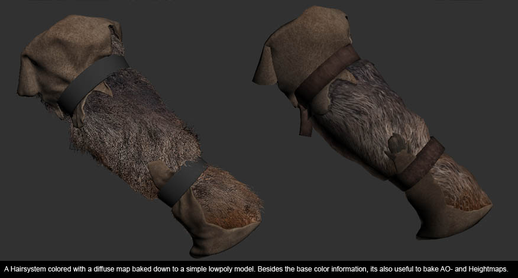
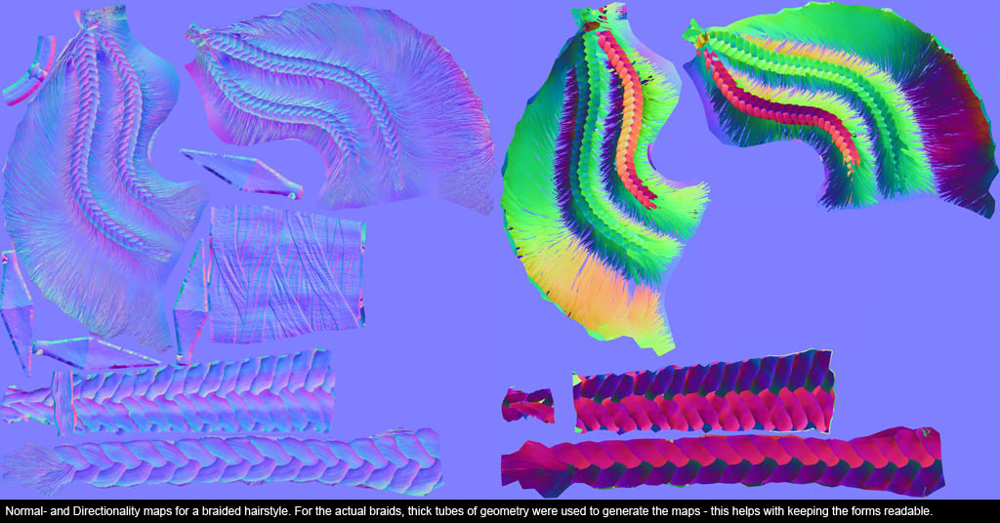
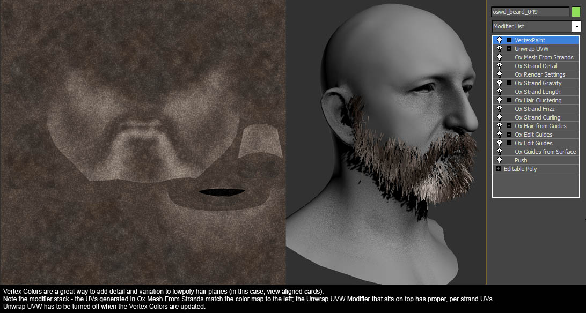
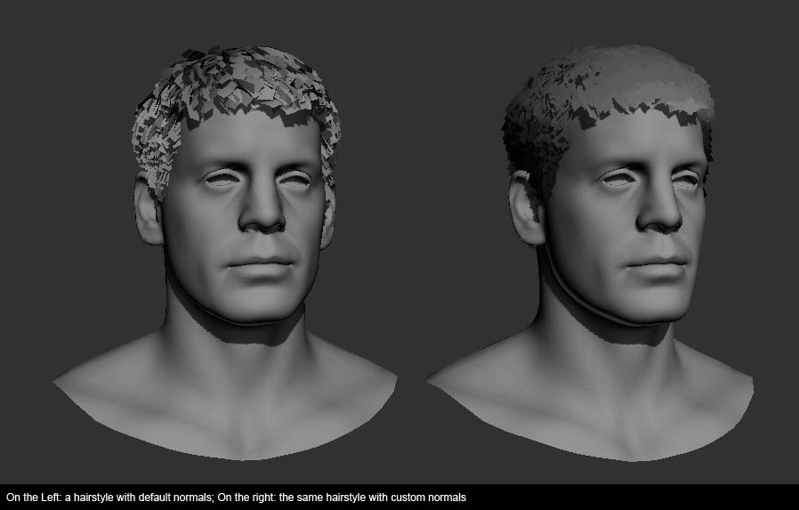
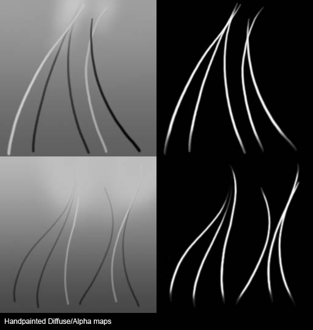

Overview
The hair shader is a dedicated rendering technique for rendering hair and fur. Due to the very fine geometry and specific lighting behavior, hair rendering is a relatively hard task to achieve in real-time with high quality results.
The most recent implementation of hair shading strongly implies the use of alpha test in conjunction with soft alpha test enabled so the use of opacity is strongly discouraged since its visual result is prone to issues especially when sorting multiple polygons using opacity.
For Ryse, we relied heavily on the 3dsMax plugin Ornatrix to do our hair and fur work. Ornatrix was used to generate both high-poly source art as well as low-poly meshes that went into the game – specifically its powerful features in regards to low-poly hair planes make it stand apart from other applications. You are not limited to using this tool but when it comes to the general process of developing your own asset, workflows may be similar.
DCC Tool Setup
Types of Hair/Hair Geometry
This will be the base/foundation of most hairstyles. Depending on the hairstyle, it will either be a simple scalp plane, or a more complex shape that defines the volume of the hairstyle. In some cases it can also be sensible to break a hairstyle up into multiple large patches. This section will use the workflow as an example which you can hopefully adapt to your own process regardless of which tool you are using. The general idea is to first create a full hair setup, which is then baked down to simple chunks of geometry - resulting in a number of texture maps.
Diffuse
Color information from your hair system can easily be baked down to a flat texture, if you set the hair to mesh display mode (Ox Mesh from and Ox Render Settings). What usually works best is to bake down multiple maps and then comp everything together in Photoshop.
Color Map
Ornatrix will color individual hairs based on the color of the growth objects at the hair’s root. A simple, hand painted color map with nice value shifts over the scalp (e.g. brighter colors in the temple area, etc.etc.) can create great results.
This method is especially useful for fur like pictured here:

Make sure to turn Per-Strand UV Coords OFF (Ox Mesh from Strands).
Randomly Scattered Colors/Materials
Ornatrix can randomly assign different material IDs to individual hairs - this allows for a generic ‘salt and pepper’ look. Useful both on its own and in combination with a color map (i.e. to get some ‘mutant’ hairs to break up the look). Assign a Multi/Sub material to the hair; set up 3-4 submaterials; in Ox Mesh from Strands, turn on Random Scattering and set the number of Material IDs.
Falloff
It's quite useful to bake down a falloff map, i.e. setting the hair tips to white, the roots to black.
Height/AO Maps
Other than the above, height/AO maps can also be very helpful for making diffuse maps. It can be useful to bake down AO/heightmaps from a hair system with fewer hairs and increased hair thickness (as well as increased number of sides for the Hair cylinder > Ox Mesh from Strands) – basically something that has a somewhat lumpy/clustery look.
Normal Map
As above, it's best to bake normal maps from a hair system with reduced hair count and increased hair thickness. Also, make sure not to use smoothing groups, and to set the hair cylinders to use more than 3 sides (in Ox Mesh from Strands).
Directionality map
Similar to normal maps, but instead the mesh must have per strand UVs (the UVs filling the entire 0-1 range in both U and V coordinates, but not exceeding that range) and the mesh must be exported with the Directionality Normals 3dsMax plugin. Make sure to check whether the resulting map works in the engine – you might have to swap the red and green channels.
Braids
In addition to the above, you will probably want to bake down separate normalmap/AO maps for braids based on pretty much solid geometry, so as to really capture the big shapes.

Parts that are hard to bake: baking down complex hair can be somewhat tricky – you are dealing with rather messy and heavy models, and baking issues are not uncommon. What usually works best is to reduce baking problems to an acceptable level and then fix remaining problems manually. You can use backdrop objects in your bake to stop the low-poly hair from capturing unwanted areas.
Another option that works very well (especially on secondary elements) is to morph your model to UV space and set up a flattened hair system.
Hair Planes
Having more resources allows for a larger number, which in turn changes what kind of hairstyle can be solved with planes rather than solid geometry/large patches of hair. However, keep in mind that LODs are required for many characters, making a hairstyle that uses hundreds of individual planes for a random NPC not a good idea. Generally, this approach (as well as View Aligned Strands, see below) will create the best looking results. Also, creating these planes (based on an existing hair system) can be very fast, depending on which tool you use. In Ryse we used Ornatrix. Ox (Ornatrix) Mesh from Strands (for UVs/orientation of hair planes), Ox Render Settings (for plane size and tapering) as well as Ox Hair from guides (for distribution settings and hair count) all play together in making good low-poly hair (or at least, a decent starting point).
Variation
By default, all hair planes generated by Ornatrix will share the same UV layout, which is bad for variation/tweaking specific areas of a hairstyle. While it is possible to achieve strand variation with Ornatrix (e.g. randomly scattered hair instance meshes with varying UV layouts), doing it manually works better:
- Add an EditPoly modifier to the top of your stack
- Go to Graphite Modeling Tool’s randomized face selection
- Convert selection to Element Sub-Object
- Change UVs as needed
Additionally, tweak UVs of key areas that needs special attention (e.g. border regions, hair/beard connection, etc.)
Vertex Colors
If the original hair system had colors, those can be baked down to vertex colors to recreate the look of your high-res hair system (since your UVs will be shared, you can't do this with textures)
If you are using a texture to color your hair, there will be a problem with UVs (mesh needs unique UVs to get color info from growth object/growth object's color map - but the mesh also needs 'per strand'/shared UVs to work with the actual hair textures)
- Initially set up the Ox Mesh from Strands to use Per-Strand UV Coords
- Add an Unwrap UVW modifier to the top of the stack (turn this modifier OFF)
- In Ox Mesh from Strand, turn off Per-Strand UV Coords
- Apply whatever texture/material you want to use for the hair
- Bake down Vertex Colors (Utilities Tab -> Assign Vertex Colors) – this modifier will be put at the top of your stack.
- Finally, turn the Unwrap UVW modifier back on

Vertex Color display in CRYENGINE can be somewhat different from what you see in your DCC tool. Some tweaking of Hue/Contrast in the Assign Vertex Colors modifier may be necessary to achieve the desired results.
Custom Normals
Using vertex custom normals for hairplanes can make a huge difference. Generally, the default normals will lead to uneven shading which breaks the look and makes the individual planes stand out.
A good tool for copying normals from a simple reference object over to your hair planes is SlideNormalThief.
Transfer Maps can be a useful tool for transferring normals or projecting them to a target mesh.

Shader Overview
Opacity Settings
Opacity
At 100, the shader uses Alpha Test (or rather, a variation thereof, results will generally be softer than real Alpha Test).
99 and below will use Alpha Blend (‘Thin Hair’). When using alpha blend, Thin Hair (in Shader Generation Params) MUST be turned ON.
Alpha Test
When using Alpha Test (Opacity 100) this value will control transparency (it determines how grayscale values are being interpreted).
When Using Alpha Blend (Opacity <=99), this value will control transparency of the hair shadow, rather than transparency of the actual hair (use Alpha Blend Multiplier for that, see below.
Texture Settings
Diffuse/Specular Color/Glossiness
Work as with most other shaders. The hair shader does not use gloss maps, so the glossiness value has to be set globally – make sure not to use super low values, as those might cause shading issues. Similarly, even very dry/coarse hair should have some specularity.
As with most other shaders. Again, the hair shader does not support Gloss Maps, thus use .ddn format for Normal Maps. The directionality maps should also be saved out as a standard Normal Map.
In order to get accurate environment lighting, make sure to set Environment Map to use the nearest cube-map (‘Nearest Cube-Map probe for alpha blended’), and specify an appropriate name in the Environment slot.
Textures for traditional Hair Planes can be created either by manually painting them, or by creating a number of quick Ox Hairsystems and baking them down (see 3.1 - Solid Geometry).
By default, anisotropic highlights will be aligned to the V coordinate in UV space - this means that in many cases a Directionality Map is not needed for hair planes, if the UV are set up properly.

Advanced Settings
In some cases turning off shadows can be beneficial (e.g. shadow artifacts with a multi-layered hair mesh).
An extra shadow mesh can then be used to still get decent shadows from the hair (e.g. Marius’ helmet plume in Ryse uses a separate mesh to cast shadows, the actual hair bits that are visible in the game have shadows turned off).
Similar to traditional Hair Planes, the difference lies in functionality within CRYENGINE: View Aligned Strands will always face the camera – this can be extremely useful for faking volume/covering up the typical ‘hair plane’ look. For View Aligned Strands to work, the hair strands in question must be assigned a unique material ID – then in the material in CRYENGINE, turn on View Aligned Strands. When generating the mesh for VACs, its best to make them very thin - thickness/width can be adjusted in the Editor/Material; Meshes that are too thick tend to break during the scaling process.
If both front and back faces of a hair strand are visible, the aligned will create a strange looking ‘twist’ at the peak point. This limits the use of View Aligned Strands to short hair, or hair that is relatively straight.
Shader Params
Shader Params | Description | Shader Gen Option |
|---|---|---|
Alpha Blend Multiplier | This functions as a multiplier for your alpha map – grayscale values get boosted. Esp. useful for Thin Hair (see below). | Default |
Diffuse Wrap | This allows for light to pass through the hair, thus illuminating a wider area. | Default |
Indirect bounce color | Best left at default value. | Default |
Secondary Color | Color and intensity of the secondary specular highlight. | Default |
Secondary Shift | This allows the secondary highlight to be shifted over the surface of your hair mesh. | Default |
Secondary Width | Width of the secondary specular highlight. | Default |
Shift Variation | Adds variation to the shift of the secondary highlight. | Default |
Soft Intersection | This controls the alpha blending of the hair against a close, solid backdrop (i.e. the scalp). | Default |
Strand Width | This controls the width of the View Aligned Strands. The mesh you exported utilizing this feature from DCC tools should be rather thin. | View Aligned Strands |
Thin Hair Threshold | Determines how alpha blending works for screen space effects (DOF, motion blur, etc.). Lower values will make the blending harder, but can cause artifacts. | Thin Hair |
Wind Settings | Allows tweaking of the force field controlling wind animation. | Default |
Shader Generation Params
Param | Description |
|---|---|
Vertex Colors | Enables vertex colors. |
View Aligned Strands | Checks if you want the hair strands to self-align to the camera. |
Thin Hair | See above. |
Ambient Cubemap | Should always be on. |
Enforce Tiled Shading | This works as an override for the global tiled shading settings. |
| Wind bending | Simulate wind effects. If turned on, options will appear under Shader Params where you can control frequency, phase, and amplitude. |